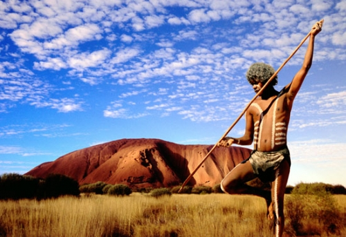
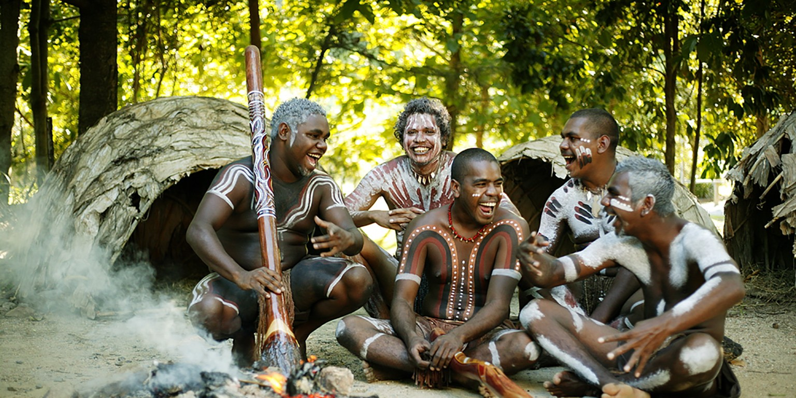
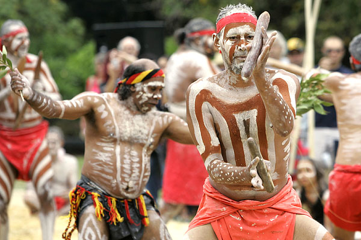
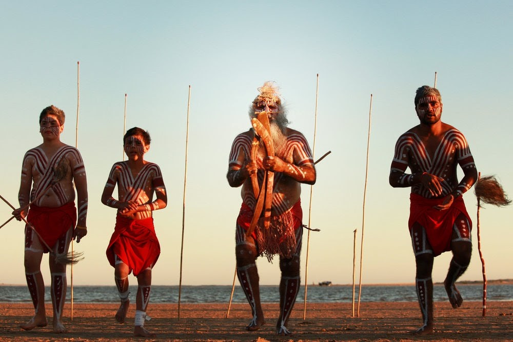

The Aborgins
Below is the audio recording of an instance when the Aborgin tribe chants a magical song for calling the rain. Keeping the balance of nature in mind, they were cautious in their attempts to invoke moderate rains.
Press play to hear their chant for rain:


The Rain Making Ritual
Aboriginal people were cautious in making rain to avoid natural disbalance and unexpected floods and preferred to do it during the appropriate time, i.e. when rain was naturally expected.
At the beginning of the rain-making ceremony, an old rainmaker is seated on the ground rubbing the sacred rain-stone, the ‘ringili’, across a flat boulder covered with blood. Seated on either side of him are three aborigines chanting magical songs. In aboriginal mythology the pearl-shell rain-stone is a con- centrated mass of kuranita (life essence) of the water.
Rain dances would only be made on other occasions after careful deliberation.
About The Tribe
Aboriginal Australians are the various Indigenous peoples of the Australian mainland and many of its islands. Known as Australia’s first people, Aboriginal Australians have lived on the continent for over 50,000 years.
Aboriginal Australians are split into two groups: Aboriginal peoples, and Torres Strait Islander peoples.
Heightened perception and knowledge of nature is a characteristic of traditional Aboriginal people. Meditation and energy trainings were part of their culture as were other forms of mental discipline.

